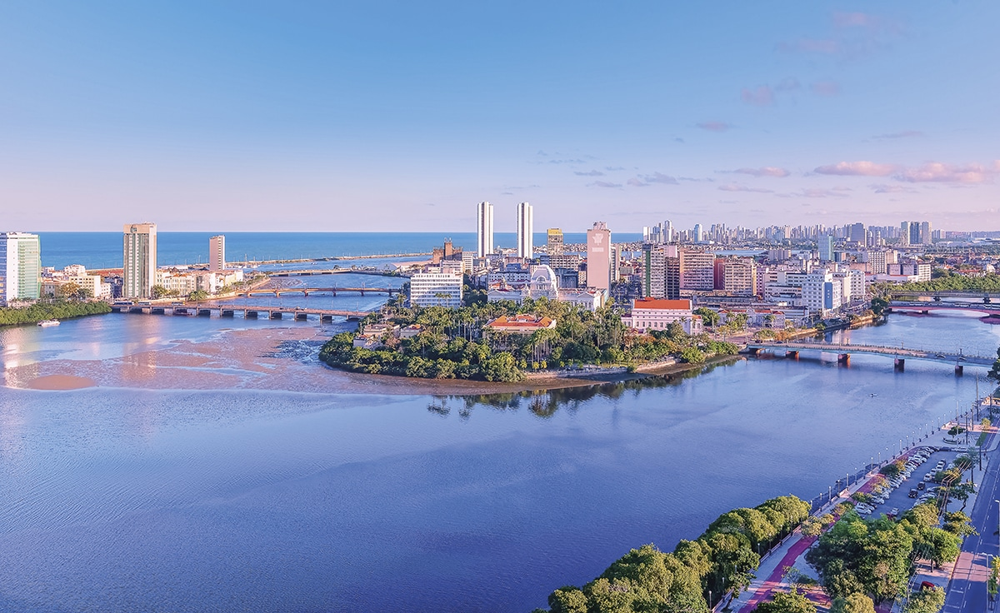

Recife é a capital do estado de Pernambuco e um dos principais destinos turísticos do Nordeste brasileiro. Conhecida como "Veneza Brasileira" devido aos seus canais, pontes e ilhas, Recife é um lugar repleto de história, cultura e belezas naturais. Fundada no século 16, a cidade possui um centro histórico encantador, com igrejas coloniais, casarões antigos e ruas de paralelepípedos que transportam os visitantes no tempo.
A cidade é famosa por sua culinária, com pratos típicos como o bolo de rolo, a feijoada e o tradicional arroz de cuxá. Recife também é um dos maiores centros culturais do Brasil, com uma intensa programação de música, teatro e dança, destacando-se especialmente durante o Carnaval, que atrai turistas do mundo inteiro.
Além de suas praias, como Boa Viagem, Pina e Porto de Galinhas, Recife é o ponto de partida para explorar outras joias do litoral pernambucano, como Olinda, cidade vizinha e Patrimônio da Humanidade, e as belas praias do litoral sul, como Carneiros. Com seu charme único, Recife é uma cidade que mistura modernidade e tradição, oferecendo aos turistas uma experiência rica em cultura, arte, gastronomia e história.
| Praia de Boa Viagem | Porto de Galinhas | Praia do Pina |
|---|---|---|
|
|
|
| Localizada na zona sul de Recife, Boa Viagem é a praia mais famosa da cidade. Com uma extensa faixa de areia clara, águas mornas e protegidas por recifes naturais (que deram nome à cidade), é ideal para banho, caminhadas e esportes. A orla é bem estruturada, com quiosques, calçadão e ciclovia. Saiba mais sobre a Praia de Boa Viagem | Apesar de ficar no município vizinho de Ipojuca, Porto de Galinhas é um dos destinos mais visitados por quem está em Recife. Famosa por suas piscinas naturais com águas cristalinas e peixinhos coloridos, é perfeita para mergulho e passeios de jangada. O vilarejo é charmoso, cheio de lojas e restaurantes. Saiba mais sobre Porto de galinhas | A Praia do Pina fica ao lado de Boa Viagem e é uma ótima opção para quem busca um ambiente mais tranquilo. É muito frequentada por moradores locais e pescadores. O mar é calmo na maré baixa, e a vista para o nascer do sol é espetacular. Também é ponto tradicional de pesca e prática de esportes aquáticos. Saiba mais sobre a Praia do Pina |